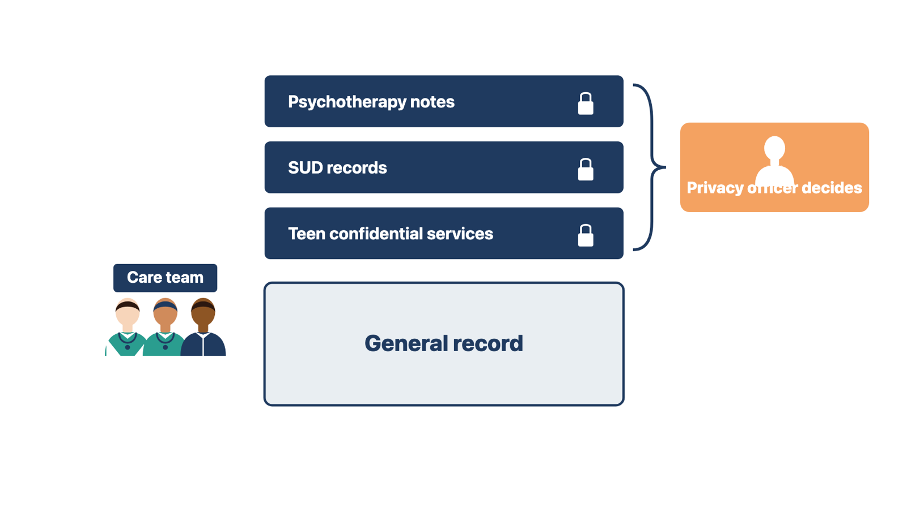
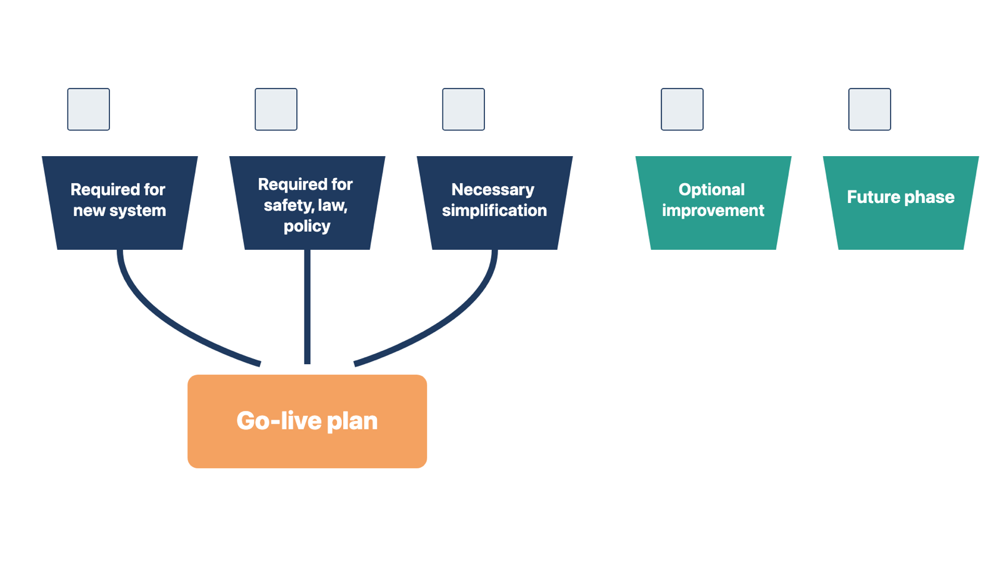
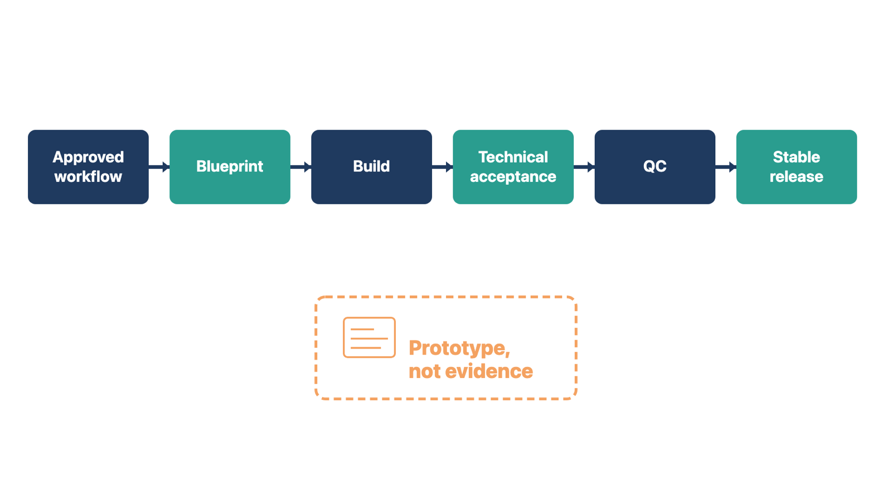

Some records carry stricter rules than the rest of the chart. A new system's default settings may show them too widely, or block access the law allows. Ask about them in discovery, because they change note types, access roles, release of information, the portal, and interfaces.
You do not decide how these rules apply. The client's privacy officer decides, with legal counsel where needed. Clinical leaders decide which note types clinicians will use. Your job is to ask the questions, record each decision and its owner, and build and test what was approved.
Rule: Ask every sensitive-record question in discovery, and route each answer to its named decision owner.

HIPAA is the Health Insurance Portability and Accountability Act. Under HIPAA, psychotherapy notes are notes a mental health professional writes about the contents of a counseling session. They are kept separate from the rest of the record. They do not include medications, session times, test results, or summaries of diagnosis, treatment plan, or progress. Those belong in the regular record.
Most uses and disclosures of psychotherapy notes need the patient's written authorization. Exceptions are narrow, such as the note writer's own use for treatment.
Ask:
42 CFR Part 2 is a federal rule that protects substance use disorder (SUD) treatment records from certain programs. It applies to a federally assisted Part 2 program. That is a provider, an identified unit, or identified staff who present themselves as providing SUD diagnosis, treatment, or referral.
HHS amended the rule in a final rule published February 16, 2024. Compliance was required by February 16, 2026. Key changes for implementers:
Ask:
Under HIPAA, a personal representative is someone with legal authority to make health care decisions for a patient. The covered entity treats that person as the patient for records purposes. A parent is usually the personal representative of a minor.
There are exceptions. When a minor may lawfully consent to a service, the parent may not control those records. State law decides much of this, and it varies by state and by service.
Proxy access lets another person use a patient's portal account. Examples are a parent for a child, or an adult child for an older parent.
| Question to ask | Who decides |
|---|---|
| At what age does a parent's proxy access change or end? | Privacy officer, under state law |
| Which results or notes are hidden from a teen's proxy? | Privacy officer with clinical leaders |
| What proof of guardianship or authority is required, and where is it recorded? | Privacy officer |
| How is proxy access for an adult granted, limited, and ended? | Privacy officer |
| Who may override a restriction, and how is it logged? | Privacy officer with security lead |
Turn each decision into requirements and acceptance scenarios. Examples: a parent proxy for a 15-year-old, a confidential visit that must not appear to the proxy, and a guardian whose documents have expired.
Compare two cases. A therapist wants a note type "no one else can see." You record the question and send note type to clinical leaders and access to the privacy officer. A front-desk lead wants parents to see everything until age 18 "like the old system." You record it and ask the privacy officer for the rule under state law. The shared rule: you ask and record; the named owner decides.
Check yourself
The system can route, remind, restrict, calculate, and record. If its design blurs who makes a professional or business decision, no one is accountable when something goes wrong.
A template can prompt clinical documentation; the clinician is still responsible for the record. An artificial intelligence (AI) tool can suggest text or a category; the approved reviewer is still accountable where review is required.
Rule: The system routes and records; people decide.
Compare two cases. A visit template fills in a normal exam by default, and the clinician signs without reading. The template has taken over a clinical decision. In a better design, the template prompts each exam section and the clinician confirms each one. The shared rule: the design must keep a named person accountable for each decision.
Check yourself
Staff learning new software cannot also absorb a full process overhaul. But a familiar process is not safe just because it is familiar.
Do not force a complete overhaul while users are learning new software. Do not keep an unsafe, noncompliant, or clearly broken process just because people know it.
Sort each proposed change into one of five classes:
This keeps go-live essentials apart from every improvement someone has wanted for years.
Rule: Only required changes and necessary simplifications go into the go-live plan.
Compare two changes. Stopping paper intake re-entry because portal data feeds the chart is a necessary simplification, so it goes in the go-live plan. Redesigning the whole referral process with a new outside service, which no one has confirmed as required, is an optional improvement or future phase. The shared rule: the class decides the timing.

A future-state map is not yet a configured system. If you skip the step between design and build, builders guess, and the build drifts from what the client approved.
Before final training begins, turn the approved workflow and requirements into a solution blueprint: a high-level description of how the system will deliver the design. Then create a build inventory: the list of items to configure.
For the workflow being released, identify:
Create build items that trace to the approved requirements. For each item, define:
The key path is:
approved workflow and requirements → solution blueprint → controlled build → technical acceptance → QC → stable release for training and UAT
Later modules continue this path. Module 7 covers quality control, testing, and defects. Module 9 covers configuration and integrations. Module 11 covers release and go-live readiness.
A prototype is an early, unfinished build used to answer a design question. Prototypes help. Label them as prototypes. Do not present an unfinished prototype as approved training, UAT, or live-use evidence.
Rule: Build only from approved requirements, and never present a prototype as evidence.
